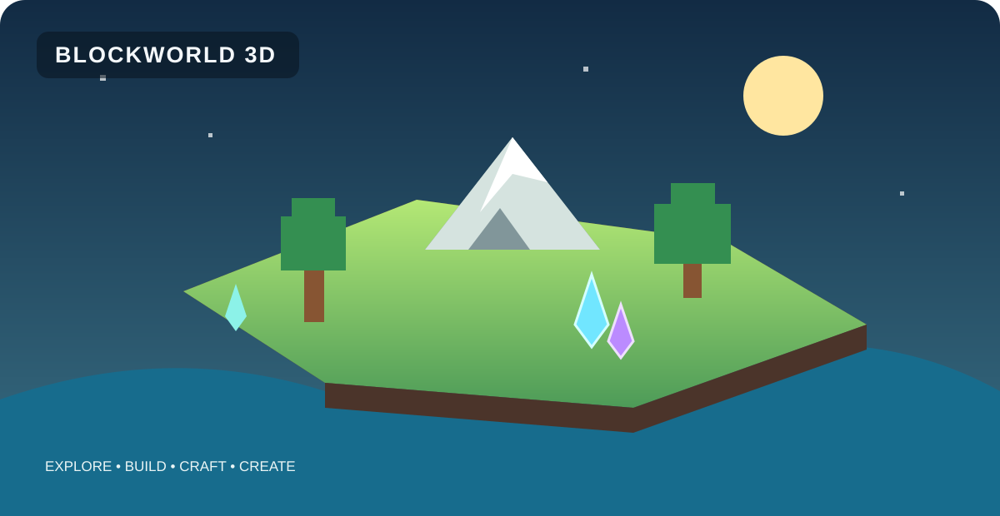

⛏️
Explore & mine
Travel across forests, deserts, mountains and swamps. Find caves, ruins, mineshafts and treasure.
A block-shaped world full of places to discover, creatures to meet and ideas to build. Gather resources, craft equipment, grow a farm and make the world yours.
Development version 1.9.15 · Java 17

Start with a few blocks and turn them into a home, farm, village or a big project.
Travel across forests, deserts, mountains and swamps. Find caves, ruins, mineshafts and treasure.
Collect blocks, shape your base and decorate it with fences, gates, lanterns and scarecrows.
Plant crops, raise animals, collect farm products and use feeders to care for your animals.
Make tools, equipment and useful items. Discover achievements and develop survival skills.
Discover wildlife, villagers and hostile creatures. Tame a fox or bring a dog companion.
Try PNG resource packs and mods, adjust settings and experiment with world seeds.
Open GitHub Releases and choose the archive for your operating system. Versioned release files stay attached to the release.
Choose the Windows x64 ZIP, extract it and run BLOCKWORLD 3D.exe.
Open permanent downloads ↗Choose the Linux x64 TAR.GZ, extract it and run ./run-game.sh.
Open permanent downloads ↗Choose macOS Apple silicon (ARM64) or Intel (x64) ZIP.
Open permanent downloads ↗Try the game, share the project, report a bug or suggest the next feature.